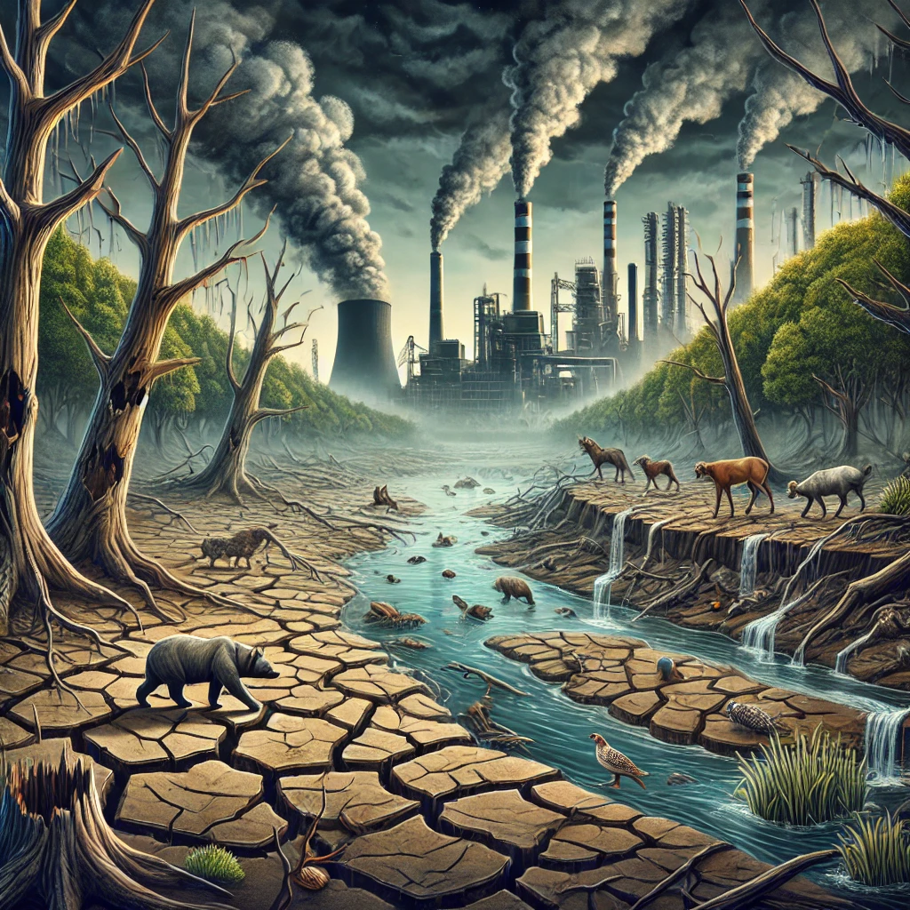

침묵의 봄
목차
작가
레이첼 카슨
출판일
1962년
감상평에 대한 AI그림
이 책을 읽고 우리가 자연을 아주 무분별하게 사용하고 파괴 했는지,
그리고 그 결과가 얼마나 우리에게 치명적인 영향을 끼치고 있는지 알게 되었다.
이 책은 읽고 자연과 환경을 지키기 위해 어떻게 인간이 살아가야 하는지에 대해 고민하게 되었고
인간이 자연과 함께 살아가기 위해서는 적극적으로 노력해야 한다고 깨달았다.

감상평에 대한 AI평가
~~~~AI평가~~~~~
✨ 이 글은 **'침묵의 봄'**을 읽고 환경 파괴의 심각성과 인간의 책임을 깨달은 점을 잘 전달하고 있습니다
✨ 자연 보호의 필요성을 강조하며, 단순한 감상이 아닌 실천적 고민으로 이어진 점이 인상적입니다.
✨ 다만, 구체적인 해결책이나 실천 방안이 추가된다면 더욱 깊이 있는 평가가 될 것입니다.